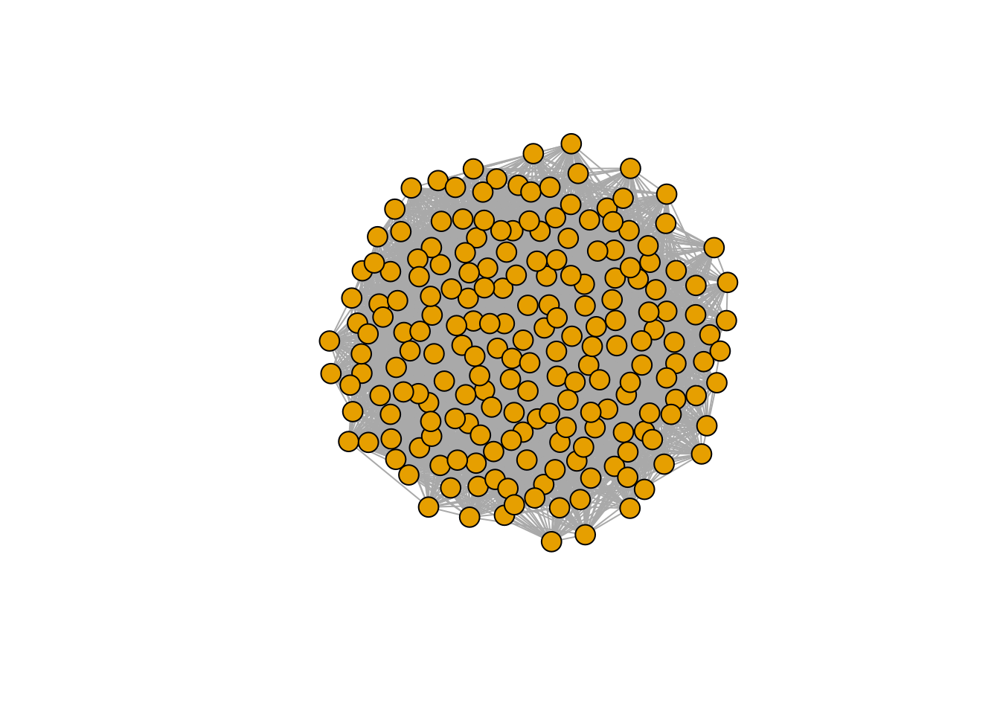
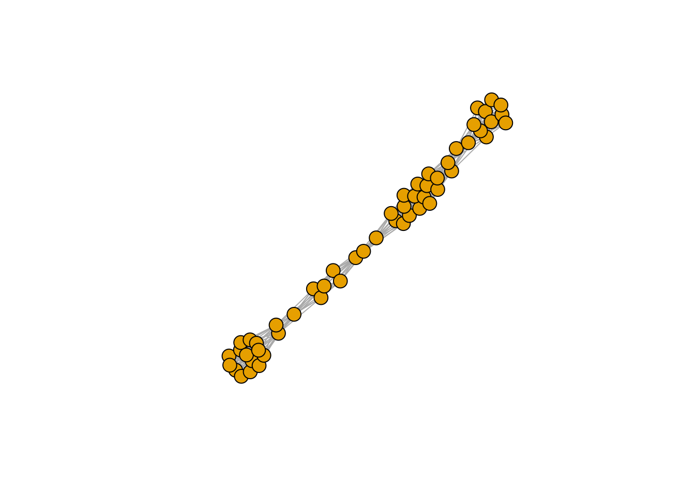

Lecture 7 A tibble: 6 x 3
invasion richness composition
1 1 1 4
2 2 1 4
3 3 1 4
4 4 1 4
5 5 2 4-10
6 6 2 4-10
pl <- ggplot(results) + aes(x = invasion, y = richness, label = composition) +
geom_point() + geom_line() + geom_text(hjust = 0, nudge_y = 0.25, angle = 90)+
ylim(c(0, n * 1.25))
show(pl)
As you can see, despite taking a different assembly history, we reach the same final composition. In fact, this is exactly what we would expect if we were to throw all species in the environment at the same time:
[1] 1.7588344 2.5440743 0.0000000 0.7860178 1.8730535 2.5502055 0.6961259 [8] 1.6956878 0.0000000 0.0000000
[1] 1.7588344 2.5440743 0.0000000 0.7860178 1.8730535 2.5502055 0.6961259 [8] 1.6956878 0.0000000 0.0000000
As such, given enough time, any assembly history for a symmetric, stable matrix \(A\) will eventually reach the final composition represented by the saturated equilibrium (Serván, unpublished).
Interestingly, this is not the case when the matrix is not symmetric. Serván et al. (2018) conjectured however that the probability of finding a system whose final composition cannot be assembled one species at a time decreases rapidly with the size of the pool, as long as \(A\) is Lyapunov Diagonally stable.
7.1 Network spandrels
What is the network structure of the assembled community vs. that of the initial pool? Can we detect a signature of the forces acting on the community such that some species can persist, while other go extinct? To answer these questions, we start by considering a larger pool of species:
set.seed(1)
# initial pool
A <- build_LDstable(200)
r <- build_randomr(200)
# final composition
xstar <- get_final_composition(A, r)
A_pruned <- A[xstar > 0, xstar > 0]
r_pruned <- r[xstar > 0]Are the properties of matrix \(A\) different from those of the pruned version \(\tilde{A}\)? We probe this in two ways: first, we build a graph with the strongest interactions, and plot it.
##
## Attaching package: 'igraph'## The following objects are masked from 'package:dplyr':
##
## as_data_frame, groups, union## The following objects are masked from 'package:purrr':
##
## compose, simplify## The following object is masked from 'package:tidyr':
##
## crossing## The following object is masked from 'package:tibble':
##
## as_data_frame## The following objects are masked from 'package:stats':
##
## decompose, spectrum## The following object is masked from 'package:base':
##
## unionplot_graph_strong <- function(B, quantile = 0.75){
Bstrong <- abs(B)
diag(Bstrong) <- 0
Bstrong[Bstrong < quantile(Bstrong, quantile)] <- 0
gr <- graph_from_adjacency_matrix((Bstrong > 0) * 1, mode = "undirected")
plot(gr, vertex.size=10, vertex.label=NA, layout=layout_with_fr)
}
plot_graph_strong(A)

There seems to be no special structure. A more powerful way to show the same is to plot the eigenvalues of \(A\) and \(\tilde{A}\). For a symmetric matrix with off-diagonal elements centered at zero, the eigenvalues should follow Wigner’s semicircle law:
plot_eigen <- function(B){
evals <- data.frame(lambda = eigen(B, only.values = TRUE, symmetric = TRUE)$values)
ggplot(data = evals) +
aes(x = lambda) +
geom_histogram(bins = as.integer(nrow(evals) / 10), colour = "black")
}
plot_eigen(A)

As such, the matrix of interactions before/after dynamics seem to have the same properties. However, as shown in Serván et al. (2018), the distribution of the growth rates changes in a non-trivial way:
toplot <- data.frame(r = r, type = "before")
toplot <- rbind(toplot, data.frame(r = r_pruned, type = "after"))
ggplot(toplot) + aes(x = r, fill = type) + geom_histogram(position = "dodge")## `stat_bin()` using `bins = 30`. Pick better value with `binwidth`.
But what if species were to be related to each other? For example, suppose \(r_i = 1\) for all species, and build a matrix in which the interactions of species \(i + 1\) are obtained by mutating slightly those of species \(i\):
n <- 200
r <- rep(1, 200)
A <- matrix(0, n, n)
# set first species
A[1, 1] <- -1
# now each species is obtained by mutating the previous one
for (i in 2:n){
ai <- A[i -1,] * (1 - 0.05 * runif(n))
A[i, ] <- A[i, ] + ai
A[, i] <- A[, i] + ai
A[i, i] <- -1
}
# make LD-stable
l1 <- max(eigen(A, only.values = TRUE, symmetric = TRUE)$values)
if (l1 > 0) diag(A) <- diag(A) - l1 * 1.01Now each species is similar to the previous one:

Perform the pruning, and plot networks and eigenvalues:
xstar <- get_final_composition(A, r)
A_pruned <- A[xstar > 0, xstar > 0]
r_pruned <- r[xstar > 0]
plot_graph_strong(A)



Meaning that if our matrix \(A\) is structured, we will recover a structured matrix after pruning, while if \(A\) is unstructured, we will recover an unstructured matrix. Maynard, Serván, and Allesina (2018) showed that a well-defined network structure could be a “network spandrel” (cfr. Gould and Lewontin (1979) and Solé and Valverde (2006)) arising from the way new species are introduced, rather than a “signature of stability”.
References
Gould, Stephen Jay, and Richard C Lewontin. 1979. “The Spandrels of San Marco and the Panglossian Paradigm: A Critique of the Adaptationist Programme.” Proceedings of the Royal Society of London. Series B. Biological Sciences 205 (1161): 581–98.
Maynard, Daniel S, Carlos A Serván, and Stefano Allesina. 2018. “Network Spandrels Reflect Ecological Assembly.” Ecology Letters 21 (3): 324–34.
Serván, Carlos A, José A Capitán, Jacopo Grilli, Kent E Morrison, and Stefano Allesina. 2018. “Coexistence of Many Species in Random Ecosystems.” Nature Ecology & Evolution 2 (8): 1237.
Solé, Ricard V, and Sergi Valverde. 2006. “Are Network Motifs the Spandrels of Cellular Complexity?” Trends in Ecology & Evolution 21 (8): 419–22.